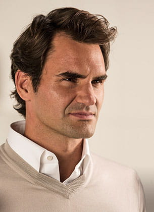

Über Roger Federer
Roger Federer ist ein Schweizer Tennisspieler, der weithin als einer der besten Tennisspieler aller Zeiten gilt. Mit über 20 Grand-Slam-Titeln hat er die Tenniswelt nachhaltig geprägt. Federer, der für seine aussergewöhnliche Technik und sein Spielverständnis bekannt ist, hat die Tenniswelt über zwei Jahrzehnte dominiert und ist auch abseits des Courts ein globales Vorbild. Als einer der beliebtesten Sportler der Welt wird Federer sowohl für seine sportliche Leistung als auch für sein Engagement im sozialen Bereich hoch geschätzt.